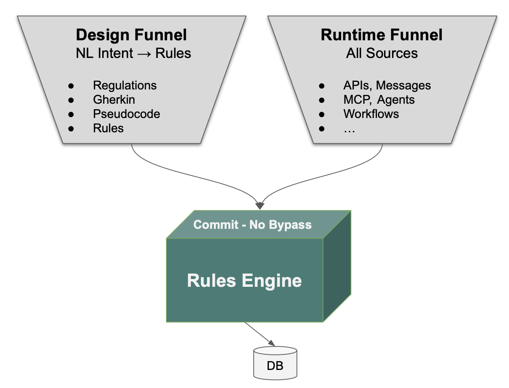

Gov By Arch
Governance by Architecture
Why the Right Answer Finally Arrived
By W. Ries and Val Huber
On a single engagement, I have personal experience with eight figures of audit exposure, traced back to a single failure mode: business rules that didn't enforce what the requirements said. This is not an outlier — I suspect you've seen it too.
I no longer think this failure mode is necessary. The architectural answer has been understood for a long time; what changed recently is that it has become available. I have been using it firsthand, and the rest of this piece is about why it matters now, and what it actually produces.
Why Discipline Doesn't Scale
Audit findings on traditional, hand-coded systems routinely reveal rules enforced on some paths but not others. Different teams, different services, different generations of code, all making honest decisions about where the check belonged. Governance not working — at scale, at cost, on systems that were supposed to be the well-understood ones.
The architectural answer has been understood for a long time. Enforce rules — not procedural code — at the commit point, where every transaction must pass through.
- Triggers got the location right but kept the procedural form, with all the bugs that come with it.
- Rules engines got both right — rules, at the commit point — but two things kept them out of reach for enterprise adoption. Most of the available engines weren't built for transaction processing and couldn't perform there. And the ones that could required analysts to learn to think in invariants, and that learning curve kept adoption out of reach for thirty years.
What changed recently is that the answer became available. AI bridged the gap — not by generating the commit-point code, which I'll get to, but by translating requirements into the declarative form the engine enforces.
The Thesis: Governance by Architecture
I find that real architectural answers hold up when written as specifications. Here is the one I wrote to evaluate GenAI-Logic:
Feature: Governance by Architecture
Scenario: Enforce business rules across every transaction
Given business requirements in any common form
(regulations, Gherkin, rules, pseudocode)
When AI compiles them into readable, manageable
declarative Data Rules attached to the data model
Then a Rule Engine enforces them on every ORM commit —
regardless of transaction source (API, agent, message,
controller, service, script)
In plain terms: you supply requirements in whatever form your business already produces them — regulations, Gherkin, rules, pseudocode. AI compiles them into declarative Data Rules. A Rule Engine enforces those rules at every ORM commit, on every transaction. The result is governance by architecture, not by discipline.
The rest of this piece explores this more deeply.
Two Funnels, Meeting at the Rules

On the left, design time. ① NL (Natural Language) Intent is whatever form the requirement takes when an analyst, a regulator, or a product owner writes it down — regulations, Gherkin, pseudocode, rules-as-invariants. ③ AI translates that intent, directed by ② Context Engineering, into ④ Data Rules.
Data Rules are declarative statements attached to the data model. The closest analogy is spreadsheet formulas: a cell that says = SUM(B2:B10) doesn't need to know who or what changed cell B5. It recomputes automatically. Data Rules behave the same way — when underlying data changes, the rules that depend on that data recompute, regardless of what triggered the change. They are path-independent.
On the right, runtime. ⑥ All Sources — APIs, agents, workflows, anything that writes to the database — funnel through one point. ⑤ The Rules Engine sits at the Commit boundary and enforces the Data Rules on every transaction, with no bypass.
The two funnels meet at the rules. Whatever form a requirement starts in, it ends as Data Rules. Whatever path a transaction takes, it ends at the Rules Engine. One enforcement point. One compilation target.
Agentic AI Didn't Create the Problem; It Made the Cost Unsustainable
Agents now generate code, propose transactions, and write to systems of record at speeds no review cycle can match. Governance built around developer discipline doesn't fail loudly — it just stops covering most of what flows past. Audit findings — already routine in traditional systems — now have a faster mechanism producing them, and that mechanism is going to get faster.
Many enterprise IT leaders are hoping that better prompts, better policy, or tighter agent confinement will hold. They will not. The cost has been visible for years; agents just made it impossible to keep absorbing.
The answer is architectural, not procedural — and the next two sections explain why two earlier attempts at it didn't settle the question, and what changed recently.
Why Two Earlier Attempts Didn't Settle This
Two earlier attempts at putting rules at the commit point both kept the procedural form of the rules — and that turned out to matter as much as where the rules were located.
Database triggers. Triggers got the location right. Code at the commit point cannot be bypassed by code on any path above it. The part they missed is what gets enforced at that location. A trigger contains procedural code. Whatever you put inside it has the same path-enumeration problem as the application code you moved it from. If the procedural body of the trigger missed a dependency, the trigger fires reliably and enforces the wrong thing reliably. Putting code at the commit point doesn't help if the code itself can't be reviewed for correctness.
AI-generated commit code. A thoughtful reader will ask the modern version: couldn't AI just write the procedural commit-point code automatically?
This was tried. From a five-rule specification, AI generated 220 lines of procedural code. The code looked reasonable. When asked about edge cases — what if the customer assignment changes? what if the product changes? — it found bugs. Each one a foreign-key change that updated the new parent's balance but left the old parent's balance uncorrected. Silent — no exceptions, just wrong data persisting to the database.
When asked to explain its own failure, the AI diagnosed itself. Its summary: "Business logic is not a coding problem. It's a dependency graph problem." Dependencies in transactional logic, it concluded, are not reliably inferable from procedural control flow using pattern matching.
That's not a vendor claim. It's the tool diagnosing its own output.
The problem with procedural commit-point code isn't volume. It's that it's wrong, by the diagnosis of the system that produces it, in ways no review process can reliably catch — because no developer enumerates the full dependency graph either.
So the architectural move is not to automate the procedural code. It's to stop generating procedural code at all, and generate something the engine can reason about.
What Changed: AI Can Translate Procedural Intent Into Declarative Rules
AI crossed a specific threshold recently. It can translate the way analysts naturally describe business logic into the form the engine enforces. That's the work happening at ③, directed by ②.
That sounds modest. It isn't. The historical adoption ceiling on declarative systems was that analysts had to learn to phrase requirements as invariants — "balance is the sum of unpaid order totals" rather than "when an order is placed, add the total to the balance." That shift was real, it was difficult, and it kept declarative adoption out of reach inside enterprises for three decades. I saw it slow declarative systems on a major project I built with Versata in that earlier era.
AI removes the barrier. Analysts continue to write the way they naturally write — procedural in form, step by step. AI translates into declarative rules. Here's what that looks like.
The analyst writes the requirement the way analysts naturally write requirements:
Feature: Check Credit
Scenario: Place an order
Given a customer with a credit limit
When an order is placed
Then copy the price from the product
And multiply by quantity to get the item amount
And sum item amounts to get the order total
And sum unpaid order totals to get the customer balance
And reject if balance exceeds the credit limit
Procedural in form. AI translates it into the declarative rules at ④:
Rule.copy(derive=Item.unit_price,
from_parent=Product.unit_price)
Rule.formula(derive=Item.amount,
as_expression=lambda row: row.quantity * row.unit_price)
Rule.sum(derive=Order.amount_total,
as_sum_of=Item.amount)
Rule.sum(derive=Customer.balance,
as_sum_of=Order.amount_total)
Rule.constraint(validate=Customer,
as_condition=lambda row: row.balance <= row.credit_limit,
error_msg="balance {row.balance} exceeds credit {row.credit_limit}")
Five rules. Standard Python. Open the file in VSCode. Set a breakpoint, step through with the debugger. Check it into git. Deploy in a container. The rules are readable code in a normal Python project, and the engine that executes them is purpose-built for transactions and open source — inspectable, forkable, no vendor lock-in for the runtime that does the enforcing.
This is the part that, more than anything else, reduced my skepticism. The five rules above are a rigorous reformulation of the requirement — each rule maps to a clause an analyst wrote. A compliance officer can read them. An auditor can read them. The 220-line procedural version, generated from the same requirement, disperses that intent across handlers, branches, and helper functions. The original requirement is no longer visible in the code; you have to reconstruct it from how the code behaves.
I review the rules before they go into production. That's itself a governance step — the human-in-the-loop check that AI translated my requirement correctly. It's only possible because the rules are short and traceable to the requirement. Reviewing 220 lines of procedural code per scenario is not realistic, and the intent is buried in the volume regardless. Reviewability is what makes governance work — at design time when I check the translation, and at audit time when someone downstream verifies enforcement against policy.
Location is one half of the architectural argument. Reviewability is the other.
Standard Components, Not Vendor Variants
The rules are the heart of the architecture, but they aren't the whole delivery. Alongside them, the same pipeline produces a standard JSON:API for every table, Kafka publish and subscribe with standard topics and consumer-group semantics, a multi-table Admin UI, a Behave test suite generated from the rules, a Logic Report mapping each transaction back to the rules that fired and the requirement they came from, and a standard Python project managed in git and deployed as a container.
None of these is a vendor-specific variant. They are the standard components, generated from the requirements rather than written by hand. For an enterprise IT executive, that's the difference between adopting a tool and adopting an exception.
Two Proofs: Requirements In, Regulation In, Governed Runtime Out
I've seen this work in two domains that come from completely different sides of the requirements pipeline.
The first is a customs eligibility system — CLVS rules over a Kafka shipment pipeline with seven tables and 130-plus columns. The inputs were artifacts a business team already owns: a plain-English requirements document, an existing database schema, an XML field-mapping spreadsheet, a sample message. It took me 2 days to assemble the requirements. The estimate for an equivalent build using a traditional Java framework was roughly two engineer-years. The Executable Requirements workflow compiled those inputs directly into a running, governed system in 10 minutes.
The second is a regulatory implementation. The input was not a requirements document at all. It was a citation of a public Canadian regulation — the CBSA Steel Derivative Goods Surtax Order. Here is the actual prompt, with no editing:
Create a fully functional application and database for CBSA Steel
Derivative Goods Surtax Order PC Number: 2025-0917 on 2025-12-11 and
annexed Steel Derivative Goods Surtax Order under subsection 53(2) and
paragraph 79(a) of the Customs Tariff program code 25267A to calculate
duties and taxes including provincial sales tax or HST where applicable
when hs codes, country of origin, customs value, and province code and
ship date >= '2025-12-26' and create runnable ui with examples from
Germany, US, Japan and China
That dense regulatory citation produced a working application — schema, data, UI, and the duty calculation logic enforced as Data Rules — without a separate requirements pass.
For an enterprise IT executive in a regulated industry, this is the larger unlock. The most expensive translation chain in compliance is regulation → requirements → specs → code → enforcement → audit. Every step is a defect generator and a cost center. The Surtax example compresses that chain to a single step, with the regulation itself as the source of truth and the running system as the artifact that enforces it.
The first proof says the pipeline works on the requirements your teams already produce. The second says the source of truth can move upstream to the regulator, and the requirements step can disappear entirely. Both produce the same governed runtime.
Why This Becomes the Organizational Norm, Not a One-Off
A single governed system is interesting. An organization that makes governed-by-architecture the norm — across hundreds of services, dozens of teams, requirements coming in from every direction — is a different argument. It's the argument that matters at the level enterprise IT actually operates.
What makes it possible is that the business side of the requirements pipeline doesn't change (the left funnel). Analysts continue to produce the artifacts they already produce. Product owners continue to review them. They flow into Jira, into specs, into the same backlogs and the same review cadences. The pipeline already exists in every enterprise. What changes is what comes out the other end.
Without an architecture like this, the same five-rule scenario produces 220 lines of procedural code on one team and 340 on another, each with the path-dependency bugs no developer (and no AI) enumerates exhaustively. Multiply that across every team, every quarter, every new endpoint, and governance reverts to a discipline problem at scale — which is to say, an unsolved problem. The audit findings I described at the top of this piece are exactly this failure mode.
With this architecture, the same input always produces declarative rules that are automatically dependency-ordered, automatically enforced at commit, and automatically inherited by every new path — including paths that don't exist yet. The pipeline doesn't change. The output does. Governance becomes pipeline-native, and the cost of governance stops scaling with the size of the portfolio.
I haven't seen this property before.
The Dividing Line
Governance-by-discipline was already failing in traditional systems, at significant cost, well before agents arrived. Agentic AI didn't create the problem. It made it the problem every CIO has to solve in the next budget cycle, not the one after.
The organizations that solve it are going to do it architecturally — rules at the commit point, in declarative form, generated from the requirements the business already writes. The organizations that try to solve it with more process, tighter agent confinement, and better-trained reviewers are going to spend the next five years discovering, in audit findings, that those approaches scale with the size of the discipline problem rather than against it. That is the dividing line.
The frame the GenAI-Logic team uses for this is Correct by Construction — correctness as a property of the architecture, not a property of the team's discipline. After what I've seen, both in audit findings on traditional systems and in the early evidence on agentic ones, that's the right frame, and the window for adopting it on a planned timeline rather than a reactive one is closing.
I've started treating my requirements as the specification the system will run. The architecture takes them from there. I'd encourage other IT leaders to look at where their next eight-figure exposure is most likely to come from, and ask whether they want to address it by architecture or by discipline.
There is only one of those answers that scales.
W. Ries is a senior enterprise IT executive with a long career building and operating large-scale systems. Val Huber is co-founder and architect of GenAI-Logic, and previously CTO at Versata.